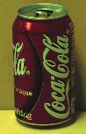

Can-Crushing Experiment
|  |
A current U.S. 12 oz soft drink can measures about 6.6 cm(2.6 inches) in diameter and 12.1 cm (4.75 inches) tall. The area of a cylinder of these dimensions is about 316 square cm (49 square inches), including the ends.
The force of one atmosphere of pressure on that area is about 3200 newtons (720 lbs). Nevertheless, such cans can be made of very thin aluminum because the same force acts outward from the inside of the can. |
If a few cubic centimeters of water is poured into such a can (just enough to cover the bottom) and the can is held above a laboratory burner for about 30 seconds, the water can be brought to the boiling point where its vapor pressure is equal to atmospheric pressure. The vapor will then push most of the air out of the can. If the can is quickly inverted into a beaker of water, sealing off the opening, the sudden drop in vapor pressure
will result in enough net inward pressure to quickly
crush the can.
|
Index
Atmospheric pressure demos
Pressure concepts |